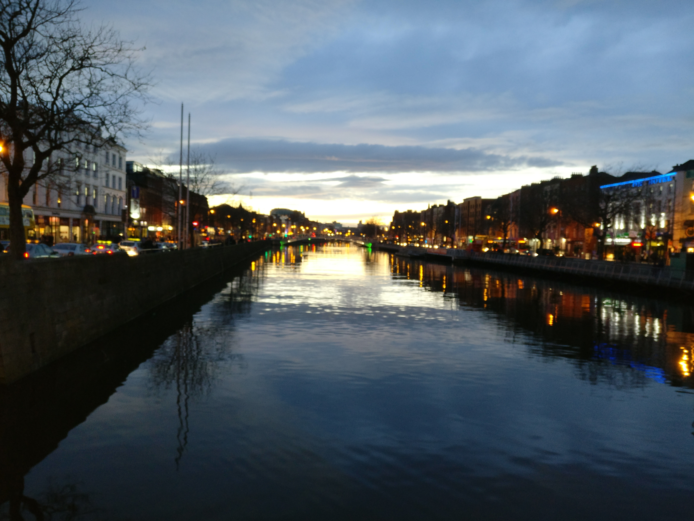
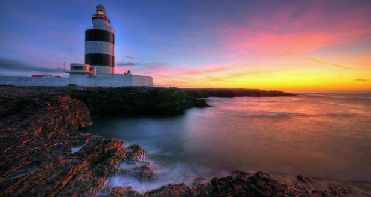

Irelands Eastern coast carries the perfect blend of urban rural variety all within a quick drive. The capital Dublin is situated on the east coast in the middle of the country. The city of Dublin contains both vibrancy and tranquility.
Dublin City is divided by the river Liffey. The north side includes O’Connell Street which carries rich History including the General Post Office which was a vital landmark in Ireland's fight for independence. The entire street has a great atmosphere and various beautiful historical monuments. The street itself is an enjoyable stroll in the spacious manner it is laid out. For shopping, on the North side Henry street is a great option and just off O’Connell street. Henry Street has a range of different clothes shops with two shopping centers, both Jervis Street and the Ilac a stone throw away.
Linking North to South is O’Connell bridge, this is a beautiful location to catch the hue sky before sunset. All the way up the river Liffey there are benches to sit, relax, and take in the alluring atmosphere.
As you make your way south there are many beautiful places to see. Grafton Street is great destination for high end fashion shops and at the top of Grafton Street you will be met by St. Stephens Green, which contains many gazebo’s, and an array of flowers. The park also holds significant historical importance. Not too far from Grafton street is Temple bar, which is a beautiful cobble street area which holds an abundance of pubs and restaurants to choose from. There is also often live music along the street from many well-known talented street artists.
I would highly recommend a walking tour of Dublin although it is a small capital, knowledge of the historical reasoning behind your surrounding will make you appreciate the city more. Other attractions worth visiting include the Guinness Storehouse to see how the perfect pint of Guinness is brewed (you will also see many horse and carriages sharing the roads as you near) Dublin Zoo where you can also have a nice walk around Phoenix park which is the largest park in a European capital and Trinity college located in the hearth of the City.
Just south of Dublin is the beautiful, somewhat untouched county of Wicklow. There are many destinations here where you will be able to experience surreal naturistic landscapes. Throughout the Wicklow mountains you can experience all the elements through valleys, hills, forests, lakes, and monasteries. There is still an ancient experience around the mountains. Glendalough (which means valley of two lakes) is an early monastic settlement which was founded in the 6th Century BC. You will find many monuments, round towers, churches, graveyards, and cathedrals around this area from its monastic history. Glendalough is a tourist friendly area where transport, hotels/hostel, and tours all can be found with ease.
Other towns well worth visiting down the East Coast include Kilkenny and Wexford. Kilkenny has an ancient feel to it, much quieter than Dublin but with more cobble and stones buildings around the city.
Wexford, which is the hottest county in Ireland, situated in the sunny south east has beautiful sights to see. Curracloe beach is a wonderful destination with fine sand, it featured in the opening scene of the film saving private Ryan. Beside the beach is a breathtaking forest area which joins up with the water outlining a view of the town and villages of Wexford which stretches on for miles.
Hook head is another great destination in Wexford. It is the oldest operating lighthouse in the world. Situated on the Hook Peninsula in South county Wexford it displays unbounded scenery of the Atlantic Ocean. There are guided tours of the 800-year-old lighthouse.
There is so much more to see on the untouched Ancient East Coast of Ireland and this article is to name but a few. Throughout the journey there are many towns and villages that contain great character, people, pubs and restaurants. Although many of these towns can be reached by public transport, the best way to get a full experience of the east coast would be by using a vehicle, giving you the freedom to stop by in any village which appeals to you without worry of bus times.